义务教育课程标准实验教科书数学一年级（上册）灵武实验区测试卷（二）（40分钟完成）
1.写门牌（3分）
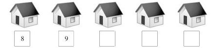
2.按规律填空（4分）
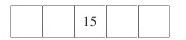
3.在（）里填上适当的数（4分）
1个十和3个一是（）2个十是（）
4.哪个盒子用的彩带长？在□内画“√”（2分）
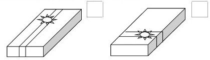
5.填空（5分）
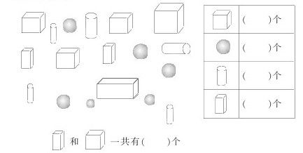
6.轻的画〇，重的画“√”（4分）
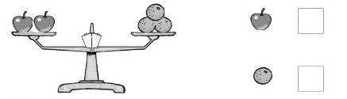
7.在□中填数（8分）
□+□=12
□-□=3
9=□-□
□=8+□
8.看图写算式（3分）
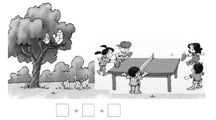
9.小马过河（15分）
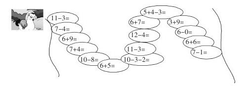
10.（8分）
我拔了5根萝卜。
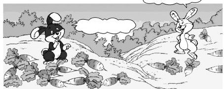
我拔了8根萝卜。
一共有□根萝卜。
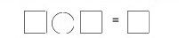
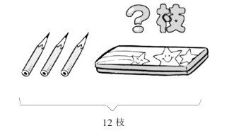
铅笔盒里有□枝铅笔。
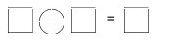
11.妈妈要买10个苹果，买哪两盘合适？用线连起来。（4分）
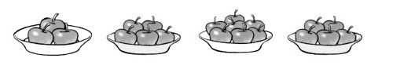
选做题：
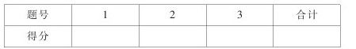
1.在〇中填上“＞”“＜”或“=”（12分）
9+8〇15
7+5〇13
15-5+2〇5+7
15-7〇6
12-4〇8
4+3+6〇4+6
2.最轻的画“〇”，最重的画“√”（2分）
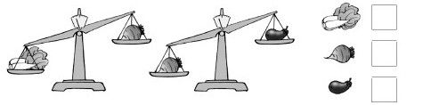
3.想一想，写出□+□=15的算式（写对一个算式1分）